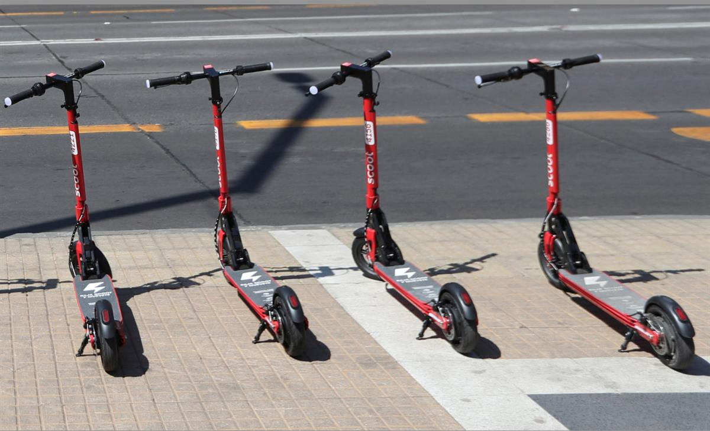
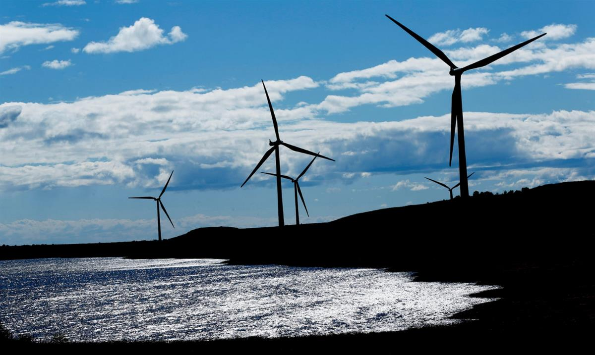

Lime expects to have attracted 20,000 new riders to its shared electric bike rental scheme by the time lockdown lifts and plans to offer e-scooters in the UK soon. Photograph: London Time/Alamy
Lime expects to have attracted 20,000 new riders to its shared electric bike rental scheme by the time lockdown lifts and plans to offer e-scooters in the UK soon. Photograph: London Time/Alamy
Jillian Ambrose Energy correspondent
Mon 6 Jul 2020 06.00 BST
Pandemic accelerates developments in sustainability from businesses and consumers
The queues were “absolutely crazy”, says Gavin Hudson, the owner of the cycle repair startup Butternut Bikes. As lockdown descended he began fixing old bikes in the parking lot of a Methodist church in north London, before moving his services to a furloughed pub in Crouch End. However, the surge in demand for cycle repairs meant the pop-up was soon able to afford a permanent address.
“Some people come in and tell us they haven’t been on a bike in 10 years,” Hudson says. “They are dragging all kinds of bikes, covered in cobwebs, out from the shed to get back on the roads. It’s great. I think it’s really true that there are few problems in society today that can’t be made better by getting people walking and cycling more.”
Butternut Bikes is one of countless British businesses poised to profit from a green economic boom in the wake of the coronavirus pandemic. While the government faces growing pressure to unveil a post-pandemic economic stimulus package that is climate friendly, Britain’s economic green shoots are already in evidence.
Steven Jennings, a partner at the global advisory firm PwC, says the lockdown has triggered a paradigm shift for consumers and companies that is already accelerating developments in sustainability – even without prompts from the government.
“One of the unintended consequences of the coronavirus crisis is the opportunity for businesses to think about the future. If a company has to rebuild itself, it makes sense to reconfigure how it works to be more sustainable,” Jennings says.
The challenge for the Treasury is to design a stimulus package that seizes the opportunities emerging from the coronavirus crisis, which can tackle large-scale climate challenges, too.
PwC includes low-carbon transport in its five-pillar plan to “build back better”, alongside major stimulus plans to accelerate low-carbon electricity generation, cut emissions from heavy industry and help build a green workforce with the skills to carry out the plans.
Those without a banged-up bike in the shed will struggle to buy a new one because of the huge demand and a supply-chain hangover from China’s manufacturing lockdown at the start of the year. For many, the answer may be shared-cycle schemes, electric scooter rentals or even the purchase of an electric vehicle.

Other countries have established electric scooter rental schemes. Photograph: Iván Alvarado/ReutersLime is one of the e-mobility firms booming in lockdown. The company expects to have attracted 20,000 new riders to its shared electric bike rental scheme by the time lockdown lifts and plans to offer e-scooters in the UK soon, too.
Alan Clarke, a director of the firm, says the number of new Lime users has grown every week since lockdown restrictions started to be eased and that riders are taking longer journeys than before. The growth comes despite a surge in competition from rivals at Mobike, Freebike and Uber’s cycle offering, Jump.
The number of people considering the purchase of an electric vehicle is rising
“Ultimately, the biggest reason people don’t cycle, walk or e-scoot is because most of the time, city infrastructure doesn’t prioritise these modes of transport,” Clarke says. “As governments are now being forced to rethink how they approach urban travel, and organisations like TfL deliver bold and transformative improvements, we do anticipate an influx of new riders over the next few months, as people search out alternative travel options.”
The number of people considering the purchase of an electric vehicle is rising, too; in part because the connection between Covid-19 deaths and air pollution has underlined the importance of clean transport. PwC estimates that government incentives could help the sector support 220,000 jobs.
Ian Johnston, the chief executive of the vehicle-charging firm Engenie, says there has been a huge uplift in the number of retail parks preparing to install charging points. The company fits rapid chargers on behalf of retail landlords and councils at no upfront cost, in exchange for a share of the charge-point revenues.
“Landlords are looking for new streams of revenues and retail tenants need new ways to drive footfall back to their stores,” he says. “The economic pressure on both means people are taking another look at vehicle charging.”
A boom in electric transport holds important implications for Britain’s energy system, offering new opportunities for green tech companies. The demand slump during the lockdown combined with record renewable energy generation has helped to provide “a window into the future net zero carbon world”, according to Jennings.
“We have had high penetration of renewable energy and negative wholesales prices at certain times of the day,” he says. “With the right government policies and regulation, more new business models will emerge, which could prove a tipping point for the likes of electric vehicle charging, batteries and time-of-use energy tariffs.”
Battery operators can help balance the system by charging up when there is more than enough renewable energy on the grid and discharging the clean electricity when it is needed. Electric vehicles can play the same role when plugged into a smart charger.
Steven Meersman, the founder of the battery operator Zenobe, says the firm has been working flat out during the lockdown to manage the “increased uptick in demand for our services”.
Even energy supply deals that offer to pay homes and companies to use more energy when there is an abundance of wind and solar power can play a role in helping to make better use of a renewable energy boom.

Energy supply deals involve offering to pay homes and companies to use more energy when there is an abundance of wind and solar power. Photograph: Murdo MacLeod/The GuardianGreg Jackson, the founder and chief executive of Octopus Energy, says demand for the energy supplier’s Agile tariff has climbed by 50% during the lockdown. The tariff offers half-hourly pricing for electricity and lets customers benefit when costs go negative.
“This is a wake-up call for policymakers and regulators that making the small changes needed to enable a smart energy grid will be essential to the green recovery so many of us are calling for,” Jackson says. “This can be done today and will unlock a revolution in cheap, clean, electric heating, electric vehicles and a decentralised electricity system.”
The fifth pillar of PwC’s plan for a green economic recovery is also in the home. Jennings believes a nationwide upgrade of drafty homes will help amplify the benefits of Britain’s electric future, boost jobs and offer a £3.20 benefit to the UK’s GDP for every £1 invested.
It is a zero-risk approach to lowering carbon emissions and household bills, while raising the quality of life and health standards, which is rumoured to have left the prime minister Boris Johnson’s chief aide, Dominic Cummings, cold. However, he may have misjudged the public mood.
“One of the barriers to better home insulation has been public apathy but as people spend more time at home this may change,” Jennings says. “A recent PwC survey showed that 60% are more engaged with their energy use than they were before the lockdown. If people are more interested in home improvements and paying attention to their energy use, it makes sense to prioritise home energy efficiency.”
SOURCE: THE GUARDIAN
Topics: Green economy